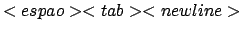

Prof. Armando Luiz N. Delgado
Uma Função é um tipo de script-dentro-de-um-script e é usado para definir um código shell através de um nome e armazenar esta definição na memória de execução do shell, para ser executado depois. É análogo ao conceito de funções e sub-rotinas em linguagens de programação como C e Java.
Para definir uma função pode-se usar uma das duas formas abaixo:
function <nome>
{
< comandos shell >
}
OU
<nome> ()
{
< comandos shell >
}
A definição de uma função deve acontecer ANTES da primeira vez em que é usada.
Para remover a definição de uma função usa-se o comando embutido unset -f <nome>.
Para listar as funções definidas usa-se o comando embutido declare -f, o que faz com que sejam mostrados não apenas os nomes mas as definições de todas as funções. Usando-se declare -f nome1 nome2 ... é mostrado o nome e definição das funções indicados como argumentos após a opção -f. O comando declare -F mostra apenas os nomes das funções.
Para executar uma função, basta digitar seu nome seguido de argumentos (se for o caso), da mesma forma que se executam scripts shell.
Ao ser invocada, uma função NÃO EXECUTA em um processo separado (como scripts shell). Ela atua mais como o efeito do comando source.
Se uma função tem o mesmo nome que um comando UNIX ou um script, a função tem precedência. Na verdade, a precedência para execução de um comando em bash(1) é:
Funções podem ter argumentos, que são referenciados da mesma forma que argumentos em um script.
#!/bin/bash
func ()
{
echo "Na Funcao: $0 $1 $2"
var1="Na Funcao"
echo "var1: $var1"
}
var1="Fora da Funcao"
echo "var1: $var1"
echo "$0: $1 $2"
func arg1 arg2
echo "var1: $var1"
echo "$0: $1 $2"
No exemplo acima, a variável var1 é a mesma para a função e para o script. Isto quer dizer que qualquer variável definida no script exportada ou não é reconhecida pelas funções definidas neste script, e se uma função altera o valor da variável, a alteração é conhecida no script, fora da função (Figura 1).
Caso a função queira definir uma variável local com o mesmo nome de uma variável já definida, usa-se a palavra chave local (Figura 2):
func ()
{
local var1
echo "Na Funcao: $0 $1 $2"
var1="Na Funcao"
echo "var1: $var1"
}
O comando return está para uma função assim como o comando exit está para um script. return é usado para terminar a execução de uma função, fazendo com que um script continue a ser executado a partir do ponto em que a função foi chamada. O script ainda pode usar o status de retorno de uma função (parâmetro especial $?).
Assim, o comando return (como exit) pode ser usado com um argumento numérico, indicando um status de retorno da função.
#!/bin/bash
func ()
{
local var1=5
var1=$((var1 + $1 - $2))
if [[ $var1 -gt 10 ]]; then
return
else
return $var1
fi
}
var1="10"
echo "var1 = $var1"
func arg1 arg2
echo "func = $?"
O maior número inteiro positivo que uma função pode retornar com return é 256. O comando return está intimamente ligado ao conceito de status de saída (exit status), que possui esta limitação. No entanto, existem várias formas de contornar este problema em situações em que se deseja retornar um inteiro maior que 256 ou mesmo strings. Os Exemplos 12-4 mostram alguns destes truques.
Funções são úteis em três casos:
alias emacs="emacs &"
emacs trab.txt # emacs começa com arquivo vazio
# e não abre o arquivo indicado
emacs () # Agora Sim !!!
{
command emacs $* &
}
No exemplo anterior, o comando embutido command indica que deve ser usado o programa executável externo emacs (a ser localizado em um dos diretórios em PATH).
É possível definir Arrays unidimensionais em bash(1).Um array é criado automaticamente se uma variável é definida através da sintaxe abaixo:
nome[indice]=valor
Por exemplo:
clientes[2]=Armando
clientes[0]=Arnoldo
clientes[10]=Ornitônio
O índice é tratado como uma EXPRESSÃO ARITMÉTICA que deve ser maior ou igual a 0 (zero)
Outra forma de definir arrays é:
nome=(valor_1 ... valor_n)
onde valor_n é da forma [indice=]valor.
Assim, no exemplo abaixo, o elemento 0 de clientes é orlando, o elemento 15 é pedro, o elemento 3 é carlos e o elemento 4 é alice.
clientes=(orlando [15]=pedro [3]=carlos alice)
Para acessar o valor de um elemento do array, usa-se:
${nome[indice]}
Note-se o uso OBRIGATÓRIO de chaves ({ }).
Pode-se usar os como índices os caracteres @ e *. Seu uso como índice retorna todos os valores já assinalados ao array como palavras separadas.
Quando a referência ao array está entre aspas (e.g., "nome[*]" ou "nome[@]"), usar o índice * expande a referência para uma única palavra composta de todos os elementos do array. O uso de índice @ expande os elementos do array em palavras separadas.
O comprimento de qualquer elemento do array se encontra com ${#nome[indice]}. No exemplo abaixo, ${#nome[5]} tem valor 5 e ${#nome[@]} tem valor 4 (pois inicialmente foram definidos apenas 4 valores).
clientes=(orlando [5]=pedro [3]=carlos alice)
Para se eliminar a definição de um array usa-se o comando unset:
unset clientes[5] # destroi o elemento 5 do array
unset clientes # destroi o array
Até agora foi visto que para expandir uma variável ou parâmetro, usa-se $ antes do nome da variável ou parâmetro. Existem expansões especiais de parâmetros que podem simplificar e tornar o uso de variáveis mais flexível. Tais expansões são mostradas na tabela 1. Outras formas de expansão podem ser encontradas na seção EXPANSION - Parameter Expansion de bash(1).
A variável de ambiente IFS (Internal Field Separator) é usada pelo shell para definir os caracteres usados como separador de palavras após uma expansão de valores de variáveis ou linha de comando (com a construção $(comando)). Ela também é usada para dividir linhas em palavras com o comando interno read.
O valor default desta variável é . Ela no entanto pode ser alterada para considerar outros caracteres como separadores. A alteração deve ser feita como indicado abaixo, usando um caso especial de quoting (veja a seção QUOTING no manual on-line de bash(1) para maiores detalhes):
IFS=$'\n' # define somente <newline> como separador
IFS=$' \t' # define espaço e tabulação como separadores
IFS=$' \t\n' # define espaço, tab e newline como separadores (default)
Veja a seção Word Splitting no manual on-line de bash(1) para maiores detalhes.
Veja o script 8 do exemplo 1 na seção de Exemplos.
Exemplos podem ser encontrados no link de Exemplos na página da disciplina.